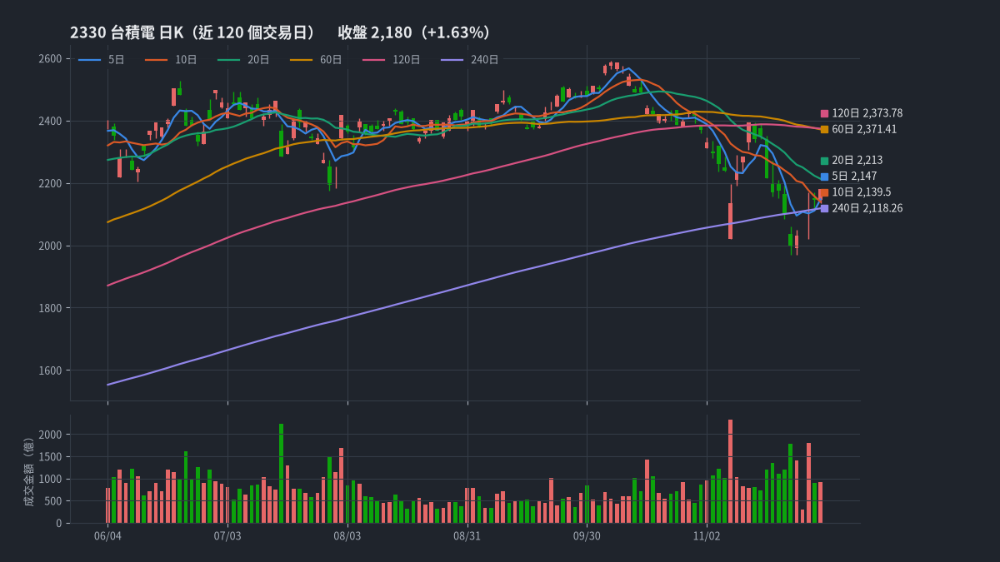
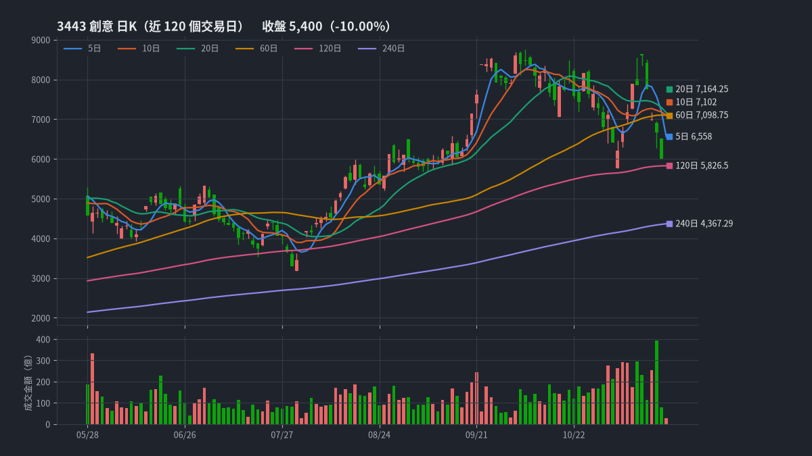
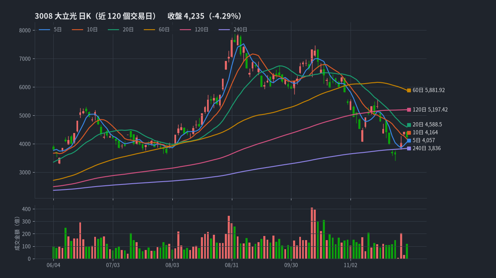

👀 個股追蹤 2026-11-20（五）
| 代號 | 名稱 | 收盤 | 漲跌 | 量（倍） | 近20日 | 均線位置 | 支撐壓力 | 法人（張） | 符合 |
|---|---|---|---|---|---|---|---|---|---|
| 2330 | 台積電 | 2,000 | -4.76% | 2.0 | -17.4% | 在所有均線之下 | 在所有均線之下，下方沒有均線支撐 | -10,901 | 外資連續賣超、頭肩頂(看跌警示) |
| 0050 | 元大台灣50 | 84.45 | -6.37% | 3.2 | -21.9% | 在所有均線之下 | 在所有均線之下，下方沒有均線支撐 | -408,014 | 外資連續賣超 |
| 2454 | 聯發科 | 3,350 | -9.95% | 1.4 | -19.1% | 在 240 日線之上，5、10、20、60、120 日線之下 | 還沒到支撐：最近的支撐是 240日線（年線） 3,039.28（距離 10.2%） | -1,432 | 外資連續賣超 |
| 3443 | 創意 | 5,400 | -10.00% | 0.2 | -32.5% | 在 240 日線之上，5、10、20、60、120 日線之下 | 跌破 120日線（半年線） 5,826.5，下一個支撐是 240日線（年線） 4,367.29（距離 23.6%） | -21 | — |
| 3008 | 大立光 | 3,670 | -7.79% | 1.3 | -40.5% | 在所有均線之下 | 跌破 240日線（年線） 3,795.65，下方已經沒有均線支撐 | +526 | — |
| 3081 | 聯亞 | 1,365 | -9.90% | 0.1 | -48.0% | 在所有均線之下 | 在所有均線之下，下方沒有均線支撐 | +34 | — |
| 3491 | 昇達科 | 1,225 | -9.93% | 0.3 | -14.3% | 在所有均線之下 | 跌破 20日線（月線） 1,314.5、240日線（年線） 1,315.62，下方已經沒有均線支撐 | +125 | 頭肩頂(看跌警示) |
2330 台積電 2,000 ▼100（-4.76%）

日K：長黑K、跳空下跌（缺口 2,060～2,085）（開 2,035｜高 2,060｜低 1,970｜收 2,000）
量能：成交 88,179 張（1,772.8 億），是 20 日均量的 2.0 倍（量增）
漲跌：近5日 -14.9%｜近20日 -17.4%｜近60日 -16.8%｜距 60 日高點 -22.6%
法人：外資 -11,863｜投信 -3,848｜自營商 +4,810｜合計 -10,901 張（外資連賣 7 天、法人 5 日 -33,479 張）（11/20）
融資融券：融資 29,764（-3,020，使用率 0.5%）｜融券 59（-52）｜券資比 0.2%（11/20）
大戶：400 張以上大股東 87.0%，週增減 -0.04（11/13）
符合：外資連續賣超、頭肩頂(看跌警示)
📢 公告（公開資訊觀測站重大訊息，1 則）
- 11/20 16:50：代子公司Emerging Fund, L.P.公告投資Element Labs Ltd.（第20款）
1.標的物之名稱及性質（屬特別股者，並應標明特別股約定發行條件，如股息率等）:
Element Labs Ltd. ("Element Labs")之特別股; 無到期日、具轉換權。
2.事實發生日:115/11/20~115/11/20
3.董事會通過日期: 不適用
4.其他核決日期:
核決層級:依子公司核決權限
民國115年11月20日
5.交易數量、每單位價格及交易總金額:
(1)交易數量：360,461股；
(2)每單位價格：每股US$27.74元；
(3)交易總金額：約 US$10佰萬元。
6.交易相對人及其與公司之關係（交易相對人如屬自然人，且非公司之
關係人者，得免揭露其姓名）:
Element Labs；與公司之關係：無。
7.交易相對人為關係人者，並應公告選定關係人為交易對象之原因及前次移
轉之所有人、前次移轉之所有人與公司及交易相對人間相互之關係、前次
移轉日期及移轉金額:
不適用
8.交易標的最近五年內所有權人曾為公司之關係人者，尚應公告關係人之取
得及處分日期、價格及交易當時與公司之關係:
不適用
9.本次係處分債權之相關事項（含處分之債權附隨擔保品種類、處分債權
如有屬對關係人債權者尚需公告關係人名稱及本次處分該關係人之債權
帳面金額:
不適用
10.處分利益（或損失）（取得有價證券者不適用）（原遞延者應列表說明
認列情形）:
不適用
11.交付或付款條件（含付款期間及金額）、契約限制條款及其他重要約定
事項:
一次付清。
12.本次交易之決定方式、價格決定之參考依據及決策單位:
由Emerging Fund之General Partner依特別股投資合約決定。
13.取得或處分有價證券標的公司每股淨值:
不適用
14.迄目前為止，累積持有本交易證券（含本次交易）之數量、金額、持股
比例及權利受限情形（如質押情形）:
360,461股；約US$10佰萬元；低於10%；無。
15.迄目前為止，依「公開發行公司取得或處分資產處理準則」第三條所列
之有價證券投資（含本次交易）占公司最近期財務報表中總資產及歸屬
於母公司業主之權益之比例暨最近期財務報表中營運資金數額（註二）:
0.13%；0.13%；NT$325,002佰萬元。
16.經紀人及經紀費用:
不適用
17.取得或處分之具體目的或用途:
長期投資
18.本次交易表示異議董事之意見:
無
19.本次交易為關係人交易:否
20.監察人承認或審計委員會同意日期:
不適用
21.本次交易會計師出具非合理性意見:否
22.會計師事務所名稱:
揚智聯合會計師事務所
23.會計師姓名:
胡湘寧
24.會計師開業證書字號:
中市會證字第0191號
25.是否涉及營運模式變更:否
26.營運模式變更說明:
不適用
27.過去一年及預計未來一年內與交易相對人交易情形:
不適用
28.資金來源:
不適用
29.前已就同一件事件發布重大訊息日期: 不適用
30.其他敘明事項:
無
均線：在所有均線之下｜均線交錯
- 在所有均線之下，下方沒有均線支撐
- 上方壓力：240日線（年線） 2,102.78（距離 4.9%）
| 均線 | 數值 | 收盤距離 | 方向 | 今天 |
|---|---|---|---|---|
| 5日線（週線） | 2,132 | -6.19% | ↘ 下彎 | 在下方（壓力） |
| 10日線（雙週線） | 2,226.5 | -10.17% | ↘ 下彎 | 在下方（壓力） |
| 20日線（月線） | 2,276 | -12.13% | ↘ 下彎 | 在下方（壓力） |
| 60日線（季線） | 2,392.24 | -16.40% | ↘ 下彎 | 在下方（壓力） |
| 120日線（半年線） | 2,382.19 | -16.04% | ↘ 下彎 | 在下方（壓力） |
| 240日線（年線） | 2,102.78 | -4.89% | ↗ 上揚 | 在下方（壓力） |
0050 元大台灣50 84.45 ▼5.75（-6.37%）

日K：長黑K、跳空下跌（缺口 88.05～89.8）（開 87.25｜高 88.05｜低 83.95｜收 84.45）
量能：成交 874,056 張（748.6 億），是 20 日均量的 3.2 倍（量增）
漲跌：近5日 -17.6%｜近20日 -21.9%｜近60日 -19.3%｜距 60 日高點 -27.5%
法人：外資 -110,455｜投信 +4,100｜自營商 -301,659｜合計 -408,014 張（外資連賣 5 天、法人 5 日 -1,155,240 張）（11/20）
融資融券：融資 59,403（-61,672，使用率 0.9%）｜融券 415（-16）｜券資比 0.7%（11/20）
大戶：400 張以上大股東 24.0%，週增減 +0.98（11/13）
符合：外資連續賣超
均線：在所有均線之下｜均線交錯
- 在所有均線之下，下方沒有均線支撐
- 上方壓力：240日線（年線） 90.47（距離 6.7%）
| 均線 | 數值 | 收盤距離 | 方向 | 今天 |
|---|---|---|---|---|
| 5日線（週線） | 91.84 | -8.05% | ↘ 下彎 | 在下方（壓力） |
| 10日線（雙週線） | 96.3 | -12.31% | ↘ 下彎 | 在下方（壓力） |
| 20日線（月線） | 99.58 | -15.19% | ↘ 下彎 | 在下方（壓力） |
| 60日線（季線） | 106.34 | -20.59% | ↘ 下彎 | 在下方（壓力） |
| 120日線（半年線） | 105.11 | -19.65% | ↘ 下彎 | 在下方（壓力） |
| 240日線（年線） | 90.47 | -6.65% | ↗ 上揚 | 在下方（壓力） |
2454 聯發科 3,350 ▼370（-9.95%）

日K：長黑K、跳空下跌（缺口 3,655～3,660）、長上影線（上檔有賣壓）（開 3,480｜高 3,655｜低 3,350｜收 3,350）
量能：成交 19,079 張（654.3 億），是 20 日均量的 1.4 倍（量平）
漲跌：近5日 -18.7%｜近20日 -19.1%｜近60日 -11.6%｜距 60 日高點 -36.6%
法人：外資 -1,612｜投信 +66｜自營商 +114｜合計 -1,432 張（外資連賣 5 天、法人 5 日 -5,887 張）（11/20）
融資融券：融資 10,611（-579，使用率 2.6%）｜融券 26（-16）｜券資比 0.2%（11/20）
大戶：400 張以上大股東 71.3%，週增減 -0.21（11/13）
符合：外資連續賣超
均線：在 240 日線之上，5、10、20、60、120 日線之下｜均線交錯
- 還沒到支撐：最近的支撐是 240日線（年線） 3,039.28（距離 10.2%）
- 上方壓力：5日線（週線） 3,729（距離 10.2%）
| 均線 | 數值 | 收盤距離 | 方向 | 今天 |
|---|---|---|---|---|
| 5日線（週線） | 3,729 | -10.16% | ↘ 下彎 | 在下方（壓力） |
| 10日線（雙週線） | 3,816 | -12.21% | ↘ 下彎 | 在下方（壓力） |
| 20日線（月線） | 3,826.75 | -12.46% | ↘ 下彎 | 在下方（壓力） |
| 60日線（季線） | 4,296.58 | -22.03% | ↘ 下彎 | 在下方（壓力） |
| 120日線（半年線） | 4,155.1 | -19.38% | ↘ 下彎 | 在下方（壓力） |
| 240日線（年線） | 3,039.28 | +10.22% | ↗ 上揚 | 在上方（支撐） |
3443 創意 5,400 ▼600（-10.00%）

日K：一字線（開高低收相同）、跳空下跌（缺口 5,400～6,000）（開 5,400｜高 5,400｜低 5,400｜收 5,400）
量能：成交 503 張（27.3 億），是 20 日均量的 0.2 倍（量縮）
漲跌：近5日 -37.3%｜近20日 -32.5%｜近60日 -3.6%｜距 60 日高點 -37.3%
法人：外資 -5｜投信 -21｜自營商 +5｜合計 -21 張（外資連賣 1 天、法人 5 日 +252 張）（11/20）
融資融券：融資 3,081（+67，使用率 9.2%）｜融券 101（-4）｜券資比 3.3%（11/20）
大戶：400 張以上大股東 64.8%，週增減 +0.10（11/13）
族群：IP
均線：在 240 日線之上，5、10、20、60、120 日線之下｜均線交錯
- 跌破 120日線（半年線） 5,826.5，下一個支撐是 240日線（年線） 4,367.29（距離 23.6%）
- 上方壓力：120日線（半年線） 5,826.5（距離 7.3%）
| 均線 | 數值 | 收盤距離 | 方向 | 今天 |
|---|---|---|---|---|
| 5日線（週線） | 6,558 | -17.66% | ↘ 下彎 | 在下方（壓力） |
| 10日線（雙週線） | 7,102 | -23.97% | ↘ 下彎 | 在下方（壓力） |
| 20日線（月線） | 7,164.25 | -24.63% | ↘ 下彎 | 在下方（壓力） |
| 60日線（季線） | 7,098.75 | -23.93% | ↘ 下彎 | 在下方（壓力） |
| 120日線（半年線） | 5,826.5 | -7.32% | ↗ 上揚 | 跌破（壓力） |
| 240日線（年線） | 4,367.29 | +23.65% | ↗ 上揚 | 在上方（支撐） |
3008 大立光 3,670 ▼310（-7.79%）

日K：長黑K、跳空下跌（缺口 3,780～3,970）（開 3,715｜高 3,780｜低 3,585｜收 3,670）
量能：成交 3,172 張（115.9 億），是 20 日均量的 1.3 倍（量平）
漲跌：近5日 -30.9%｜近20日 -40.5%｜近60日 -34.6%｜距 60 日高點 -53.0%
法人：外資 +827｜投信 -283｜自營商 -18｜合計 +526 張（外資連買 2 天、法人 5 日 +1,184 張）（11/20）
融資融券：融資 1,878（-341，使用率 5.7%）｜融券 81（-4）｜券資比 4.3%（11/20）
大戶：400 張以上大股東 53.1%，週增減 -0.60（11/13）
族群：光通
均線：在所有均線之下｜均線交錯
- 跌破 240日線（年線） 3,795.65，下方已經沒有均線支撐
- 上方壓力：240日線（年線） 3,795.65（距離 3.3%）
| 均線 | 數值 | 收盤距離 | 方向 | 今天 |
|---|---|---|---|---|
| 5日線（週線） | 4,271 | -14.07% | ↘ 下彎 | 在下方（壓力） |
| 10日線（雙週線） | 4,703.5 | -21.97% | ↘ 下彎 | 在下方（壓力） |
| 20日線（月線） | 5,062 | -27.50% | ↘ 下彎 | 在下方（壓力） |
| 60日線（季線） | 6,066.75 | -39.51% | ↘ 下彎 | 在下方（壓力） |
| 120日線（半年線） | 5,182.05 | -29.18% | ↗ 上揚 | 在下方（壓力） |
| 240日線（年線） | 3,795.65 | -3.31% | ↗ 上揚 | 跌破（壓力） |
3081 聯亞 1,365 ▼150（-9.90%）

日K：一字線（開高低收相同）、跳空下跌（缺口 1,365～1,515）（開 1,365｜高 1,365｜低 1,365｜收 1,365）
量能：成交 428 張（5.8 億），是 20 日均量的 0.1 倍（量縮）
漲跌：近5日 -35.3%｜近20日 -48.0%｜近60日 -53.3%｜距 60 日高點 -61.3%
法人：外資 +65｜投信 -27｜自營商 -5｜合計 +34 張（外資連買 4 天、法人 5 日 +1,130 張）（11/20）
融資融券：融資 4,289（-229，使用率 16.8%）｜融券 186（-16）｜券資比 4.3%（11/20）
大戶：400 張以上大股東 43.6%，週增減 -0.04（11/13）
族群：光通
📢 公告（公開資訊觀測站重大訊息，1 則）
- 11/20 15:17：本公司有價證券近期多次達公布注意交易資訊標準，故公告 相關訊息，以利投資人區別暸解（第53款）
1.事實發生日:115/11/20
2.發生緣由:依財團法人中華民國證券櫃檯買賣中心通知辦理。
3.公司每股面額(元):10元
4.財務業務資訊（倘公司股票每股面額非10元，每股盈餘、每股淨值
及每股股利等，與其他每股面額10元之公司可能無法直接比較，建議
投資人參考公開資訊觀測站公佈之財務比率分析資料，包含股價淨值比
、股東權益報酬率、股利殖利率及本益比等，以保障自身權益）:
(1)單月
最近一月單月 去年同月 與去年同期增減%
(115/10) (114/10)
營業收入(百萬元) 570 201 184%
稅前淨利(百萬元) 325 70 364%
本期淨利(百萬元) 260 56 364%
每股盈餘(元)(除權後追溯調整) 2.55 0.55 367%
==========================================================================
(2)單季
最近一季單季 去年同期 與去年同期增減%
(115第3季) (114第3季)
營業收入(百萬元) 1,562 553 182%
稅前淨利(百萬元) 777 124 527%
本期淨利(百萬元) 621 99 527%
每股盈餘(元)(除權後追溯調整) 6.12 0.98 525%
==========================================================================
(3)最近四季累計
114年第4季至115年第3季
營業收入(百萬元) 4,330
稅前淨利(百萬元) 1,987
本期淨利(百萬元) 1,598
每股盈餘(元)(除權後追溯調整) 15.76
5.有無「財團法人中華民國證券櫃檯買賣中心對有價證券上櫃公司
重大訊息之查證暨公開處理程序 」第4條所列重大訊息之情事（如
「有」，請說明）:無
6.有無「財團法人中華民國證券櫃檯買賣中心對有價證券上櫃公司
重大訊息之查證暨公開處理程序」第11條所列重大訊息說明記者會
之情事:無
7.其他應敘明事項:
(1)以上115年10月及去年同期比較數之財務資料係本…
均線：在所有均線之下｜均線交錯
- 在所有均線之下，下方沒有均線支撐
- 上方壓力：5日線（週線） 1,634（距離 16.5%）
| 均線 | 數值 | 收盤距離 | 方向 | 今天 |
|---|---|---|---|---|
| 5日線（週線） | 1,634 | -16.46% | ↘ 下彎 | 在下方（壓力） |
| 10日線（雙週線） | 1,863.5 | -26.75% | ↘ 下彎 | 在下方（壓力） |
| 20日線（月線） | 2,068.25 | -34.00% | ↘ 下彎 | 在下方（壓力） |
| 60日線（季線） | 2,624 | -47.98% | ↘ 下彎 | 在下方（壓力） |
| 120日線（半年線） | 2,350.51 | -41.93% | ↘ 下彎 | 在下方（壓力） |
| 240日線（年線） | 1,839.08 | -25.78% | ↗ 上揚 | 在下方（壓力） |
3491 昇達科 1,225 ▼135（-9.93%）

日K：長黑K、跳空下跌（缺口 1,315～1,360）、長上影線（上檔有賣壓）（開 1,240｜高 1,315｜低 1,225｜收 1,225）
量能：成交 508 張（6.3 億），是 20 日均量的 0.3 倍（量縮）
漲跌：近5日 -14.3%｜近20日 -14.3%｜近60日 -4.3%｜距 60 日高點 -28.6%
法人：外資 +18｜投信 +142｜自營商 -34｜合計 +125 張（外資連買 1 天、法人 5 日 +685 張）（11/20）
融資融券：融資 2,606（-168，使用率 15.1%）｜融券 90（-50）｜券資比 3.5%（11/20）
大戶：400 張以上大股東 37.7%，週增減 +1.10（11/13）
族群：網通
符合：頭肩頂(看跌警示)
均線：在所有均線之下｜均線交錯
- 跌破 20日線（月線） 1,314.5、240日線（年線） 1,315.62，下方已經沒有均線支撐
- 上方壓力：20日線（月線） 1,314.5（距離 6.8%）
| 均線 | 數值 | 收盤距離 | 方向 | 今天 |
|---|---|---|---|---|
| 5日線（週線） | 1,389 | -11.81% | ↘ 下彎 | 在下方（壓力） |
| 10日線（雙週線） | 1,376 | -10.97% | ↗ 上揚 | 在下方（壓力） |
| 20日線（月線） | 1,314.5 | -6.81% | ↘ 下彎 | 跌破（壓力） |
| 60日線（季線） | 1,415.92 | -13.48% | ↘ 下彎 | 在下方（壓力） |
| 120日線（半年線） | 1,414.8 | -13.42% | ↘ 下彎 | 在下方（壓力） |
| 240日線（年線） | 1,315.62 | -6.89% | ↗ 上揚 | 跌破（壓力） |
🔍 型態掃描
W底(範例)（40 天）
目前沒有相似度 ≥85% 的股票
歷史相似型態 10 次，樣本少：5天 平均+3.8%／上漲80%、10天 平均+12.9%／上漲80%、20天 平均+8.0%／上漲50%｜全市場同期 20天 平均+4.3%／上漲53%
說明
- 均線、支撐壓力的判斷和盤勢解析相同（config「盤勢解析」的均線與門檻）；均線和漲跌用還原股價，收盤價是實際價格。
- 量能：今天成交量和前 20 日均量比較，1.5 倍以上是量增、0.7 倍以下是量縮。
- 融資融券每天晚上 9:30 才公布，傍晚的報告是前一個交易日的；大戶是集保每週五更新的 400 張以上大股東比例。
- 「符合」是 config「選股」裡今天成立的條件組（含 K 線型態）。
※ 依固定規則整理的盤後資料，僅供參考，不構成投資建議